Projet Erasmus+ porté par l'académie de Nice et l'INSPÉ de Nice, la Richard-Hallmann-Schule (Allemagne) et l'Institut national de physique de la Terre (Roumanie), avec l'appui de Météo-France, du CNES (Calisph'Air) et de Thales Alenia Space.
Même cadre : 10 m par pixel, puis 20 cm par pixel
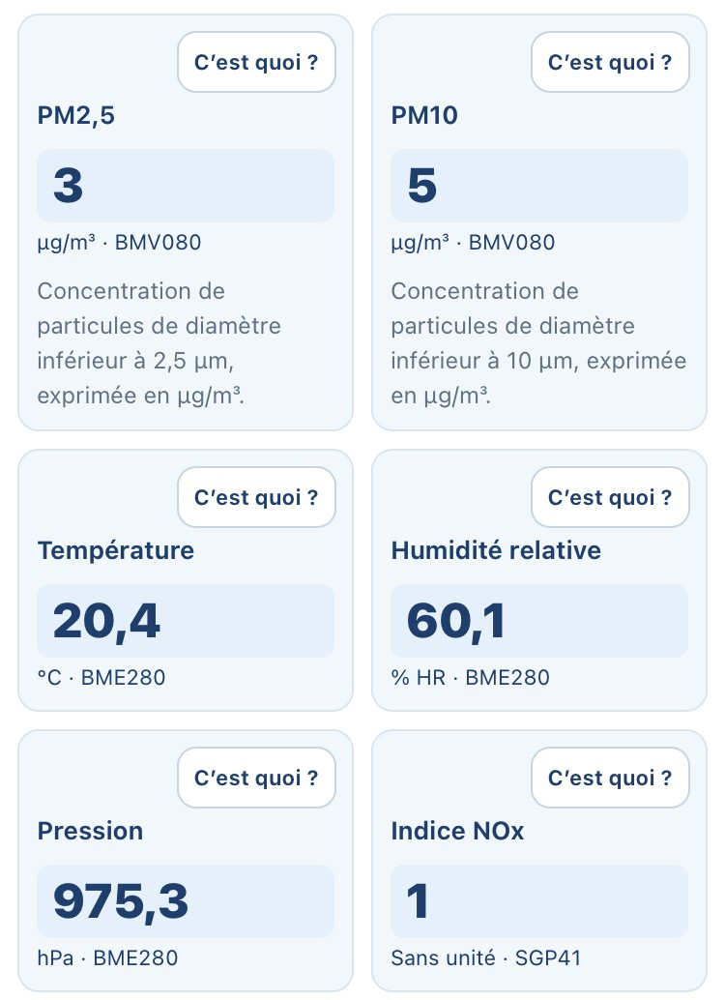
Capture de secours à déposer avant chaque rotation : images/secours-appli.jpg Elle s'affiche ici si la recopie de l'écran du téléphone échoue.
Santé environnementale : deux familles de risques
Polluants de l'air
Les particules fines (PM2,5) Présentes dans l'air que nous respirons.
Mesurer leur concentration
Agents infectieux
Chikungunya : un virus transmis par le moustique tigre. Vibrio : des bactéries présentes dans les eaux côtières.
Étudier les conditions environnementales favorables
Comment les étudier, avec quelles données et à quelle échelle ?
Icônes : Font Awesome Free, CC BY 4.0.
La rue
Respirer autour de l'établissement
L'air et les capteurs
La région
Chikungunya, le climat change la donne
Le moustique tigre
La mer
Le risque Vibrio
Les bactéries des eaux côtières
La rue
Respirer autour de l'établissement
Capteurs sur le terrainCollège, prolongements lycée4 à 5 h
La région
Chikungunya, le climat change la donne
Données en ligneLycée3 à 4 h
La mer
Le risque Vibrio
Données en ligneLycée3 à 4 h
Comprendre ce que mesure la source
Comparer des situations
Discuter la fiabilité
Mettre en regard les échelles
Formuler une recommandation
La rue · Pourquoi sortir mesurer ?
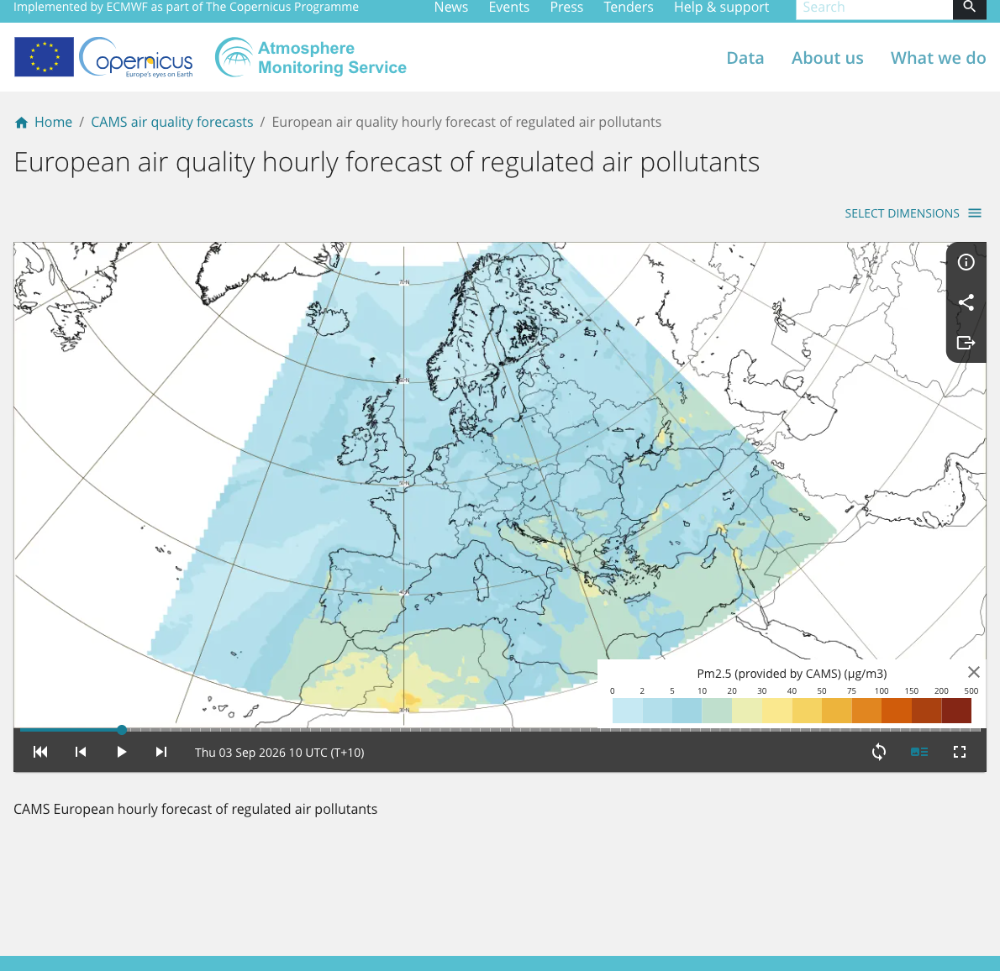
CAMS, Copernicus : une estimation des PM2,5 calculée par un modèle, pour des mailles de plusieurs kilomètres
Geod'air : les stations réglementaires des Alpes-Maritimes, chacune en un point fixe
Les concentrations de particules fines sont-elles différentes entre les lieux autour de notre établissement ?
La rue · Le boîtier
BMV080
Particules fines
PM2,5 et PM10, en µg/m³
BME280
Température, humidité, pression
°C, % d'humidité relative, hPa
SGP41
Indice NOx
sans unité
Le boîtier crée son propre Wi-Fi ou se branche en USB : sa page s'ouvre dans un navigateur.
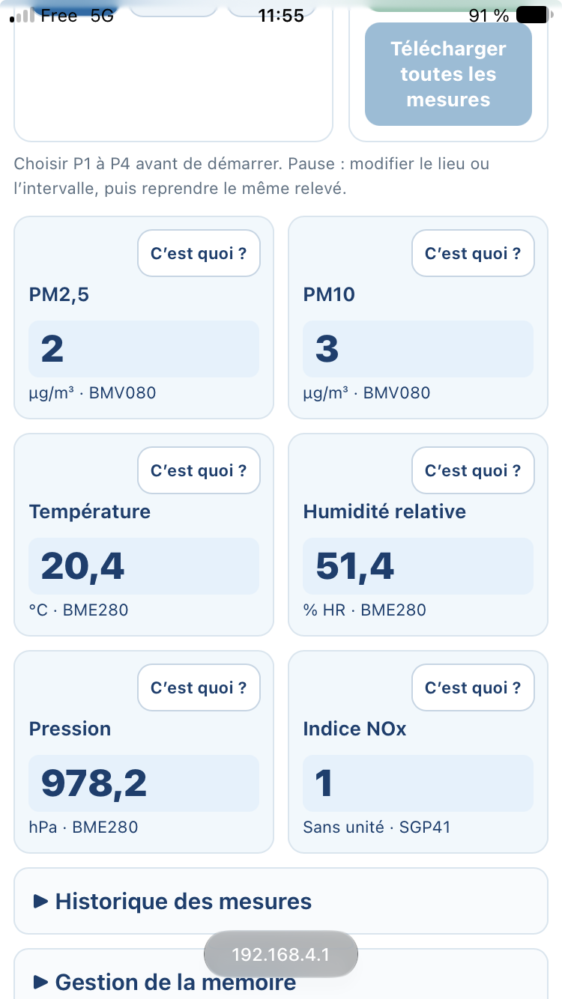
La rue · Quatre lieux, deux passages
P1Entrée
P2Axe circulé
P3Espace calme
P4Végétalisé
P1→P2→P3→P4→P4→P3→P2→P1
3 minutes d'arrêt à chaque lieu, capteur immobile à hauteur de respiration
Une mesure toutes les 10 secondes, le lieu choisi sur la page avant chaque arrêt
Porteur du boîtierporte la mesure
Compteur de véhiculescompte le trafic
Observateurnote le site et la météo
Responsable sécuritéveille au groupe
La rue · Une boucle mesurée avec ce boîtier
Campus Valrose, Nice · 16 novembre 2026, 13 h 05 à 13 h 51
P1Entrée de l'université
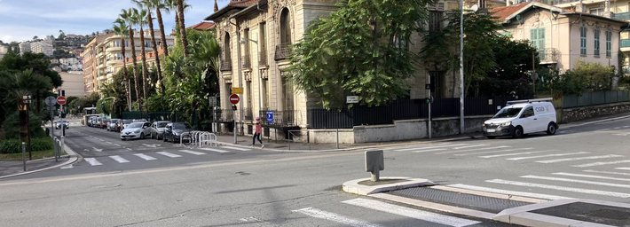
P2Axe routier, feu rouge
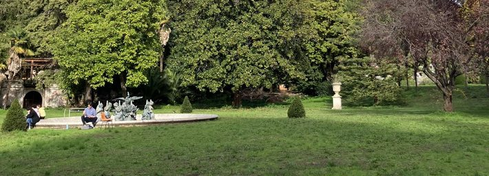
P3Pelouse du parc Valrose
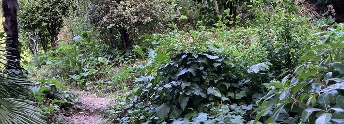
P4Sous-bois du campus
PM2,5PM10Mesure sans valeur de particules (98 sur 182)
Icônes : ce qui a été noté pendant chaque arrêt
La rue · Un écart est-il réel ?
Un écart entre deux lieux n'est retenu que s'il dépasse la variation observée quand on revient au même endroit.
1. Le critère
D(i,j) > max(d(i), d(j))
d(i) : différence entre l'aller et le retour au lieu i D(i,j) : différence entre les moyennes des lieux i et j Critère appliqué séparément à chaque grandeur mesurée
On garde un écart entre deux lieux seulement s'il est plus grand que les variations observées au même lieu.
2. Exemple fictif, PM2,5
Lieu
Aller
Retour
Moyenne
Variation aller-retour
P2Axe circulé
20 µg/m³
18 µg/m³
19 µg/m³
2
P3Espace calme
10 µg/m³
12 µg/m³
11 µg/m³
2
P1Entrée
14 µg/m³
20 µg/m³
17 µg/m³
6
D(P2,P3) = |19 − 11| = 8 max(2, 2) = 2
8 > 2
Écart discernable
D(P2,P1) = |19 − 17| = 2 max(2, 6) = 6
2 < 6
Écart non discernable
ce qui ne prouve pas que les lieux sont identiques
3. Ce que l'on peut conclure
L'axe circulé a ici des PM2,5 plus élevées que l'espace calme : l'écart est discernable dans les conditions de cette campagne. Avec l'entrée, l'écart (2) reste plus petit que la variation à l'entrée (6) : on ne le retient pas.
iImportant
Ce critère est un outil pédagogique de discernabilité : ce n'est ni un test statistique, ni une preuve de causalité. La méthode s'inspire de la mesure mobile de la qualité de l'air par passages répétés.
Même sens à l’aller et au retour : P3 plus humide que P2
La rue · Ce que mesure chaque capteur
PM2,5 et PM10µg/m³
Des concentrations massiques estimées
Le capteur optique estime la masse de particules par mètre cube d'air.
Précision typique annoncée : ±10 µg/m³ entre 0 et 100 µg/m³, dans des conditions d'essai. Notre boîtier n'a pas été vérifié sur place.
Indice NOxsans unité
Un indicateur relatif, pas une concentration
Le SGP41 réagit à certains gaz oxydants, notamment le NO₂ et l'ozone. L'indice dépend d'une référence qui évolue avec les mesures.
Un indice NOx de 1 ne signifie pas qu'il n'y a pas de NO₂. Il ne se compare pas à une concentration en µg/m³.
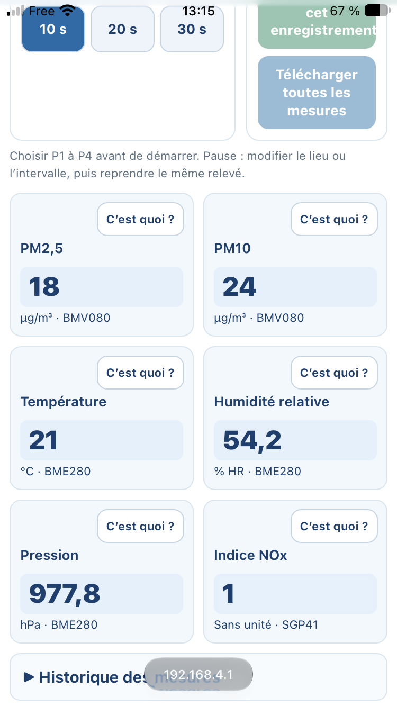
La rue · Trois sources, trois échelles
Mesure portée
Le boîtier
Où ?
Un point précis du parcours.
Quand ?
Un arrêt de 3 minutes.
Résultat
Une concentration locale estimée de PM2,5.
Mesure fixe
La station réglementaire
Où ?
Un site fixe, parfois éloigné.
Quand ?
Selon le pas de temps des données.
Résultat
Une mesure contrôlée de PM2,5.
Modèle régional
CAMS, Copernicus
Où ?
Une maille de plusieurs kilomètres.
Quand ?
Selon le pas de temps du modèle.
Résultat
Une estimation modélisée des PM2,5.
Comparons les PM2,5 pendant notre campagne
Source
Valeur (µg/m³)
Lieu précis
Horaire ou période représentée
Boîtier
6,3
Campus Valrose, les 4 lieux de la boucle
13 h 05 à 13 h 51, moyenne de 84 mesures
Station de fond
4,4
Nice Arson, urbaine, influence de fond
Moyenne horaire brute, 13 h à 14 h
Station trafic
12,2
Nice Promenade, urbaine, influence trafic
Moyenne horaire brute, 13 h à 14 h
CAMS
2,2
Maille d'environ 11 × 8 km qui contient le campus
Moyenne des valeurs de 13 h et 14 h
Même polluant, mais pas nécessairement le même lieu ni la même durée.
La rue · Trier avant d'écrire
À partir de nos mesures, que pouvons-nous réellement affirmer ?
Établi
Ce que les mesures permettent de retenir dans les conditions de cette campagne.
Exemple fictif
« La rue passante présente ici davantage de PM2,5 que la rue calme. »
Écart de 8 µg/m³, supérieur aux variations aller-retour de 2 µg/m³.
Suggéré
Une interprétation plausible, mais non démontrée.
Exemple fictif
« La circulation pourrait contribuer à cet écart. »
Le protocole ne démontre pas que le trafic est responsable.
Hors de portée
Une affirmation que les données ne permettent pas de soutenir.
Exemple fictif
« Les élèves respirent un air dangereux pour leur santé. »
Leur exposition individuelle n'a pas été évaluée.
EASE Air : une note de situation et de recommandation pour l'établissement.Une page adressée à un responsable : constats, limites et recommandations.Une nouvelle campagne de mesures peut constituer une recommandation scientifiquement justifiée.
La région · Chikungunya, le climat change la donne
Antibes, été 2025
144
cas autochtones de chikungunya
« Un épisode hors norme »Santé publique France, bilan 2025, édition Paca, p. 11
La question de la ressourceDans quelle mesure l'évolution des conditions climatiques peut-elle favoriser l'expansion d'Aedes albopictus et contribuer à l'émergence du chikungunya en Europe ?
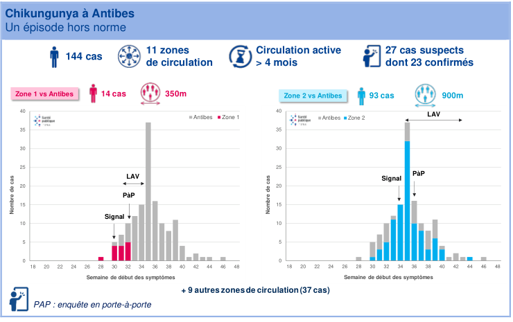
La région · Ce que font les élèves
Le climat
ERA5-Land, Copernicus
température et pluie, jour par jour, depuis 1951
Le moustique
Cartes de l'ECDC
où Aedes albopictus est établi, en Europe
Les cas
Santé publique France
cas importés et cas autochtones
Sans capteur : un ordinateur, un tableur et trois sources de données en ligne.
La région · Trois villes en 2025
Jours favorablesmai à octobre 2025, sur 184
Aedes albopictuscarte ECDC, juin 2025
Cas importés2025
Cas autochtones2025
AntibesFrance
174
case ERA5-Land d'Antibes
établi
Alpes-Maritimes
102
cas importés en Paca
144
épisode d'Antibes
BarceloneEspagne
175
case ERA5-Land de Barcelone
établi
Catalogne
84
cas importés en Catalogne
0
Espagne entière
LondresRoyaume-Uni
99
case ERA5-Land de Londres
non établi
Angleterre
160
cas importés, Angleterre, pays de Galles, Irlande du Nord
0
Angleterre, pays de Galles, Irlande du Nord
À votre avis, pourquoi aucun cas autochtone n'a été détecté en Espagne ?
Jour favorable : température moyenne entre 16,2 et 31,6 °C (Mordecai et al., 2017). Sources : Copernicus ERA5-Land (via Open-Meteo), ECDC et EFSA, Santé publique France, RENAVE (Espagne), UKHSA. Données consultées le 13/11/2026. Icônes : Font Awesome Free, CC BY 4.0.
jours favorables par an, moyennes 1951-1980 puis 2016-2025
Londres
50 → 88,3
mêmes périodes
Données ERA5-Land (Copernicus, via Open-Meteo). Jour favorable : température moyenne journalière entre 16,2 et 31,6 °C. Graphique retracé à partir des données utilisées dans l'activité.
La région · Fiabilité et échelles
Le même article donne deux modélisations différentes, et Londres passe de 99 à 166 jours favorables.
Antibes
174
171
Barcelone
175
174
Londres
99
166
16,2 à 31,6 °C, température constante11,9 à 28,3 °C, avec 8 °C d'écart dans la journée
Une case de données climatiques
8 km × 11 km
Le capteur posé dans une cour
un point
Jours favorables de mai à octobre 2025, sur 184. Plages : Mordecai et al., 2017, PLoS Neglected Tropical Diseases 11(4): e0005568. Case ERA5-Land à la latitude d'Antibes.
La région · Agir
Extraits du bulletin de veille écrit en faisant l'activité comme un élève (Barcelone)
Niveau de vigilance proposé pour la saison 2026
ÉLEVÉ de juin à octobre
MODÉRÉ en mai et en novembre. En 2025, le climat et la présence avérée du moustique étaient favorables de juin à octobre et des cas importés sont arrivés, sans transmission locale détectée.
Recommandations
Signaler sans délai, de mai à novembre, tout cas importé et traiter contre les moustiques autour de chaque malade encore virémique.
Vider chaque semaine les récipients d'eau stagnante (soucoupes, seaux, gouttières) chez soi et dans les lieux publics.
Rappeler aux voyageurs de retour de zones touchées (Cuba, océan Indien) de se protéger des piqûres et de consulter en cas de fièvre avec douleurs articulaires.
ALERTEPlusieurs cas importés de chikungunya viennent d'être signalés dans votre territoire. Les conditions climatiques actuelles permettent-elles une transmission locale ?« Chikungunya, le climat change la donne », p. 15
Les groupes deviennent des cellules de veille sanitaire : climatologue, entomologiste, épidémiologiste, spécialiste des données, professionnel de santé, chargé de prévention.
La mer · Le risque Vibrio
La question de la ressource
« Et si quelques degrés supplémentaires dans l'eau de mer suffisaient à faire apparaître de nouveaux risques sanitaires ? »« Le risque Vibrio », p. 1
Une hypothèse que les élèves examinent avec des données réelles.
La problématique de la ressourceComment les modifications des écosystèmes marins liées au changement climatique influencent-elles la répartition des agents pathogènes émergents ?
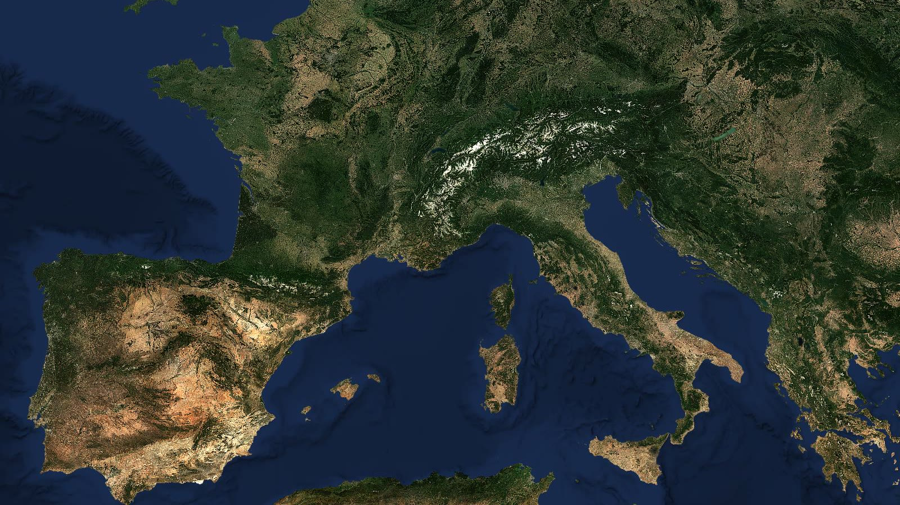
EOxCloudless by EOX IT Services GmbH (Contains modified Copernicus Sentinel data 2024)
La mer · Ce que font les élèves
Les Vibrio : certains sont des agents infectieux, qui contaminent par les plaies ou par ingestion d'aliments crus.
Baignadeplaie en contact avec l'eau de mer
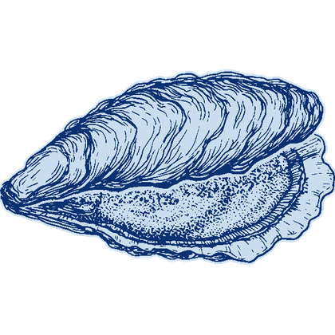
Produits de la merconsommés crus
L'indice
Vibrio Viewer, ECDC
favorabilité aux Vibrio, jour par jour, mers d'Europe
La mer
Copernicus Marine
données de surface, modèles de 2 à 4 km
Les coquillages
Atlas sanitaire des coquillages
zones de production et leur classement
Dans l'activité faite pas à pas : 5 points de côte, 7 dates en 2025, 35 lignes de tableur.
La mer · Un R² presque parfait
R² = 0,99998
sur les 10 points où l'indice existe
L'indice est calculé à partir de la température : indice ≈ 2,8 × (température − 18).
Le graphique retrouve la règle du modèle. Il ne mesure pas l'abondance des bactéries.
Corrélation ou causalité ?
Activité faite pas à pas : 5 points, le 15 de chaque mois d'avril à octobre 2025. Température du modèle Copernicus Marine, indice du Vibrio Viewer (ECDC). Graphique retracé à partir des données utilisées dans l'activité.
La mer · La carte de l'ECDC, 15 août 2025
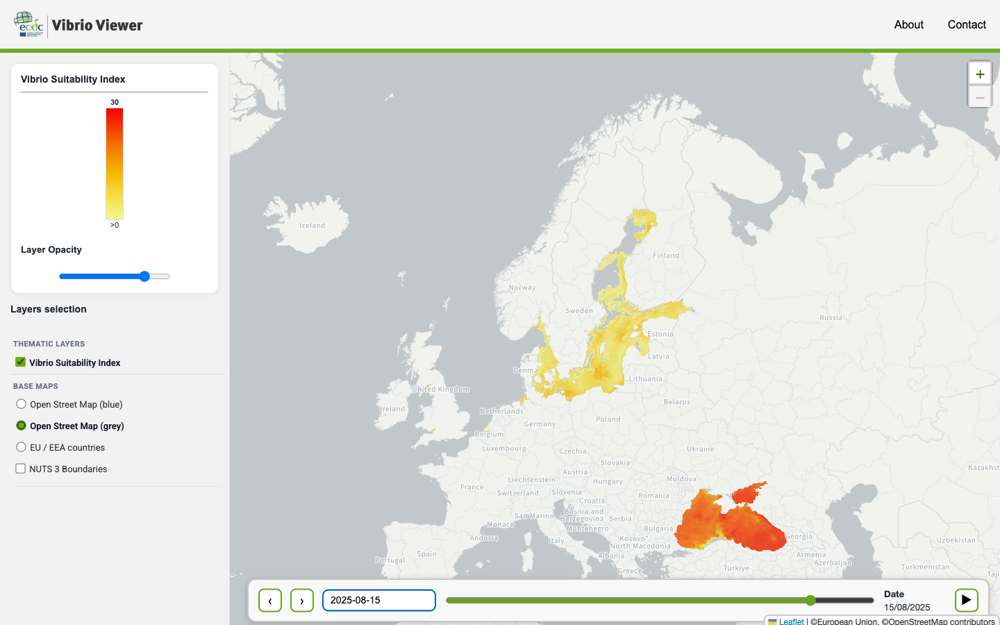
Baie de GdańskBaltique, Pologne
20,8 °C
colorée sur la carte
Sète, côté merMéditerranée, France
24,7 °C
vide sur la carte
Gdańsk, à 20,8 °C, se colore. Sète, à 24,7 °C, reste vide. À votre avis, pourquoi ?
La mer · La règle du modèle
Le modèle ne calcule un indice que si l'eau atteint au moins 18 °C et si sa salinité reste sous 26 ‰.
Baie de GdańskBaltique
Estuaire de la GirondeAtlantique
Sète, côté merMéditerranée
Températureau moins 18 °C
20,8 °C
22,8 °C
24,7 °C
Salinitémoins de 26 ‰
6,7 ‰
19,5 ‰
37,6 ‰
Indice calculé15 août 2025
7,7« Low »
13,4« High »
aucuncase vide
Ce que dit l'ECDC« Les seuils (T ≥ 18 °C, S < 26) ont été calibrés pour la mer Baltique. Leur transposition à la Méditerranée, à la mer Noire et aux côtes atlantiques n'a pas été validée de façon indépendante. »Vibrio Viewer v2, page « About », traduit de l'anglais
Une case vide veut dire : pas d'indice calculé. Elle ne dit rien de la présence des Vibrio.
La mer · Les échelles
Dans la lagune de Thau, ni le Vibrio Viewer ni Copernicus Marine ne fournissent de valeur.
Vibrio Viewer de l'ECDC, 15 août 2025 : « No data available at this location ». Le modèle Copernicus de Méditerranée (maille de 4,2 km) n'a aucun point dans la lagune.
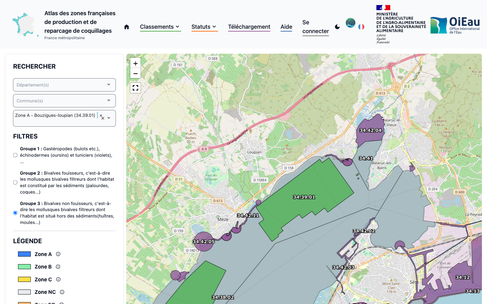
Atlas sanitaire des coquillages : les zones de production de la lagune, dont la zone 34.39.01 (Bouzigues-Loupian, classée B). Ce classement repose sur la bactérie E. coli, pas sur les Vibrio.
Satellite → région / littoral → station locale → cas sanitaire individuelLes échelles de la ressource, p. 8
La mer · Agir
Extraits du bulletin « Vibrio Alert » écrit en faisant l'activité comme un élève (littoral français, 15 août 2025)
Estuaire de la Gironde
ÉLEVÉ
Indice ECDC 13,4 (« High »). Eau à 22,8 °C, salinité 19,5 ‰.
Sète, côté mer
NON ÉVALUÉ
Indice non calculé : eau à 24,7 °C, mais salinité 37,6 ‰, au-dessus du seuil de 26 ‰.
Lagune de Thau
NON ÉVALUÉ
La lagune n'est couverte par aucun des outils européens utilisés.
Recommandations
Gironde : les personnes qui ont une plaie ou une maladie chronique évitent de se baigner dans l'estuaire et protègent leurs plaies ; pas de pêche à pied dans la zone interdite 17.14.
Thau : demander des mesures locales de température, de salinité et de Vibrio dans la lagune.
Partout : bien cuire les coquillages pour les personnes fragiles.
CELLULE DE CRISELes groupes jouent des acteurs : scientifiques, agence sanitaire, collectivité territoriale, professionnels de la mer, équipe de télédétection. Ils reçoivent les données jour après jour et décident du niveau de vigilance : faible, modéré, élevé ou très élevé.« Le risque Vibrio », p. 12
Dans l'activité, l'indice de l'estuaire de la Gironde de J-3 à aujourd'hui :
12,18J-3, 12/08
12,25J-2, 13/08
12,47J-1, 14/08
13,3815/08
La rue
Mesurer sur le terrain
La région
Croiser les données
La mer
Interroger les modèles
Trois échelles, une même démarche scientifique
Des données à une recommandation argumentée
Et maintenant
À vous de tester
Choisissez une ressource adaptée à vos élèves et expérimentez-la entre novembre et mai.
→ / espace / PageDown : avancer · ← / PageUp : reculer · R : remettre le chrono à zéro · dans la fenêtre principale : L ouvre cette fenêtre, F met en plein écran